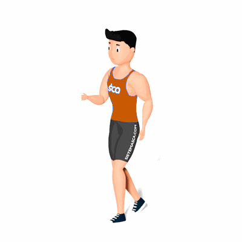

Saltito Alternado

O exercício irá trabalhar a queima de calorias e fortalecimento das pernas, com maior ênfase nas coxas e panturrilhas.
Ficha Técnica
Tipo: Aeróbico
Grupo Muscular: Perna
Aparelho: Nenhum
Músculos: Nenhum
Como realizar
- Em pé e com coluna reta;
- Inicie o movimento realizando saltos curtos alternando entre uma perna na frente e outra atrás;
- Para manter a coordenação, movimente também os braços como se fosse correr;
- Realize o exercício pelo tempo prescrito pelo professor(a).
 RC STORE
RC STORE